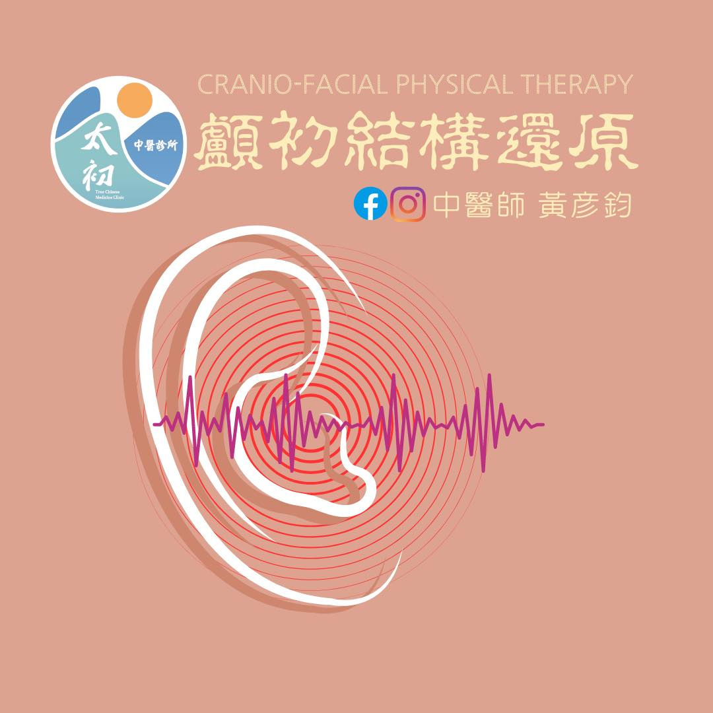

#耳鳴，是臨床上常見的疑難雜症之一，成因多樣複雜，治療上也很棘手。
#耳鳴，是臨床上常見的疑難雜症之一，成因多樣複雜，治療上也很棘手。
近日幫助一位耳鳴已經6-7年的年輕媽媽，從第一胎懷孕開始，就出現耳悶的症狀，日漸轉為耳鳴，各處求醫，求診過多位中醫師、西醫師，接受過各式治療與檢查，都不見改善。這天透過中醫師 薛博文轉介來到診間，認識了這位辛苦的媽媽。
複雜棘手的問題，自然不可能用簡單的方法處理，只能竭盡全力，使出渾身解術來幫助這位媽媽，除了從內科、針灸切入外，也考量傷科結構來全面處理。
在仔細診察後，發現有顱骨的歪斜偏移狀況，而耳道內聽骨與相關耳周肌群也都與頭顱側面的顳骨有直接關係，因此我認為 #顱初結構還原 的頭顱校正起了關鍵作用。
今天回診媽媽表示👩：
「起初治療結束後還沒什麼感覺，但過了3天後，突然感覺到耳鳴的聲音變小了，連同耳悶的感覺也都減少了！」
「跟原本比起來，應該好了八成有唷！」
「真的很神奇~其實我本來已經要放棄了，就跟耳鳴和平共處一輩子，但這次讓我又有希望，這10天下來心情都非常好！」
真的打從心底的替這位媽媽感到開心，也很開心自己能在這類疑難雜症上有使力的空間。從這次的經驗來說，顱骨間的歪斜偏移很可能是臨床上常忽略的原因，許多慢性、難解的問題如長期鼻塞、偏頭痛、耳鳴等，從顱骨的角度思考，會是個很關鍵的切入點。
期待後續的治療與努力，能繼續幫助這位媽媽，擺脫困擾許久的耳鳴，當醫生的成就感也就來自於這些診間裡的努力與回饋，這次應該可以讓我開心到媽媽下次回診😁😁😁
太初中醫診所
中醫師 黃彥鈞
中醫安心講堂 褚衍強中醫師
中醫師 鄒知秀 Dr.Emma
